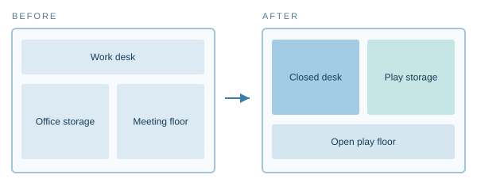
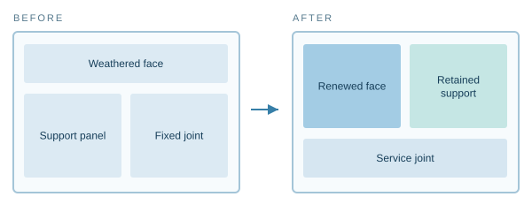
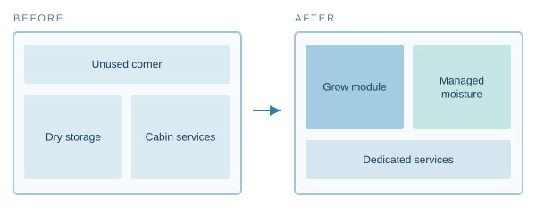
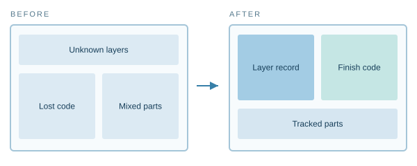

A home may need a new atmosphere, a different purpose or a new way of living. We explore surfaces as part of a larger, serviceable system: finishes, furniture, partitions, equipment and controls working together.
These are design and research concepts, not a catalogue of thirty supplied or certified Neipclova systems. Some rely on familiar modular approaches; others require substantial engineering. Long life here means adaptable, maintainable spaces across changing needs.
Every illustration below is a functional before-and-after schematic, not a measured floor plan, construction drawing or performance demonstration.
01 / HomeLiving room to dining room
Open full-size diagram ↗A folding table and movable storage create a dining setting without rebuilding the room.
Mechanism, material role & design review
- What makes it change
- Furniture deployment and movable modules
- Role of decorative surfaces
- Durable, coordinated faces on table storage and cabinetry
- Engineering to resolve
- Check hinges, load ratings, chair storage and clear circulation.
Living room to kitchen studio
Open full-size diagram ↗A contained cooking pod can define a cooking zone in a multi-use room.
Mechanism, material role & design review
- What makes it change
- A serviced kitchen pod, ventilation and approved utilities
- Role of decorative surfaces
- Replaceable pod doors and side panels
- Engineering to resolve
- Water, drainage, electrical capacity, heat separation and ventilation need professional design. A finish cannot create these services.
Kitchen zone to sleeping zone
Open full-size diagram ↗A closed kitchen module and separate fold-down sleeping unit create a different room mode.
Mechanism, material role & design review
- What makes it change
- Isolated kitchen module plus convertible furniture
- Role of decorative surfaces
- Coordinated cabinetry skins across both modes
- Engineering to resolve
- Cooking must be safely isolated; utilities, ventilation, clearances and local requirements must be resolved.
Glass to privacy wall
Open full-size diagram ↗A transparent partition can become visually opaque when a separate privacy-glazing system changes state.
Mechanism, material role & design review
- What makes it change
- Switchable glazing and its controls
- Role of decorative surfaces
- Compatible adjacent frames and opaque decorative panels
- Engineering to resolve
- Glass design, power, control safety and privacy performance are separate from architectural film.
Wall to television
Open full-size diagram ↗A display is integrated within a wall so the surface alternates between calm background and media.
Mechanism, material role & design review
- What makes it change
- Display hardware, power, ventilation and controls
- Role of decorative surfaces
- Coordinated surround and accessible service panels
- Engineering to resolve
- Do not enclose ventilation or cover equipment access. A decorative sheet alone does not become a screen.
A room changes its surface wardrobe
Open full-size diagram ↗Mechanically attached decorative facings can be exchanged for a different atmosphere.
Mechanism, material role & design review
- What makes it change
- Replaceable facing panels and compatible attachment
- Role of decorative surfaces
- Seasonal colour and texture selection
- Engineering to resolve
- Removal depends on the attachment and substrate. Standard bonded films are not assumed to peel cleanly or be indefinitely reusable.
Child’s room to guest room
Open full-size diagram ↗Modular storage and reconfigurable furniture let the room support changing household needs.
Mechanism, material role & design review
- What makes it change
- Furniture reconfiguration
- Role of decorative surfaces
- Renewable cabinet and partition faces
- Engineering to resolve
- Maintain anchorage, edge protection, circulation and appropriate safety review.
Home office to playroom

Open full-size diagram ↗A fold-away desk and organised storage clear the working area after office hours.
Mechanism, material role & design review
- What makes it change
- Fold-away furniture and lockable storage
- Role of decorative surfaces
- Easy-to-maintain decorative storage faces
- Engineering to resolve
- Manage power leads, pinch points, storage security and furniture stability.
A clearer route for later life
Open full-size diagram ↗Movable units and coordinated finishes can simplify circulation as mobility needs change.
Mechanism, material role & design review
- What makes it change
- Layout adjustment and accessible hardware
- Role of decorative surfaces
- Contrasting or tactile surface cues where appropriate
- Engineering to resolve
- An accessibility professional should review dimensions, stability and individual needs. No medical benefit is promised.
Quiet room to shared room
Open full-size diagram ↗An acoustic partition creates a quieter zone and can reopen for family use.
Mechanism, material role & design review
- What makes it change
- An acoustic partition assembly
- Role of decorative surfaces
- Replaceable decorative faces on the partition
- Engineering to resolve
- Acoustic performance comes from the entire assembly, seals and installation, not its appearance.
Bedroom daylight to privacy mode
Open full-size diagram ↗Privacy glazing and lighting change the visual relationship between a bedroom and adjoining space.
Mechanism, material role & design review
- What makes it change
- Glazing controls and lighting design
- Role of decorative surfaces
- Soft-toned adjacent panels and cabinet faces
- Engineering to resolve
- Confirm glare, privacy, controls and electrical installation; opaque appearance is not structural separation.
Guest suite to work suite
Open full-size diagram ↗A hotel or guest room can include a stowable work setting within its cabinetry.
Mechanism, material role & design review
- What makes it change
- Deployable work furniture
- Role of decorative surfaces
- Consistent cabinet faces between modes
- Engineering to resolve
- Check ergonomics, furniture loading, sockets and housekeeping access.
Cabinet fronts renewed without changing the layout
Open full-size diagram ↗Exchangeable door facings can update a sound cabinet system.
Mechanism, material role & design review
- What makes it change
- Door replacement or detachable facing
- Role of decorative surfaces
- A new finish on a retained base
- Engineering to resolve
- Check hinge geometry, door weight, edge details and existing cabinet condition.
A kitchen island that moves
Open full-size diagram ↗A properly designed mobile unit can change preparation and dining arrangements.
Mechanism, material role & design review
- What makes it change
- Lockable mobile furniture with suitable services
- Role of decorative surfaces
- Coordinated end panels and storage faces
- Engineering to resolve
- A decorative finish does not make plumbing mobile. Check weight, stability, brakes and safe clearances.
Façade panels with replaceable outer faces

Open full-size diagram ↗Modular exterior panels can allow selected facing replacement during maintenance.
Mechanism, material role & design review
- What makes it change
- Engineered cladding and mechanical fixing
- Role of decorative surfaces
- Exterior-qualified decorative finish
- Engineering to resolve
- Attachment, drainage, wind loading, fire strategy and approvals require project engineering.
Acoustic panels with a new visual identity
Open full-size diagram ↗Decorative faces can be selected for an acoustic module without assuming that every skin preserves its performance.
Mechanism, material role & design review
- What makes it change
- Qualified acoustic module with reviewed facing
- Role of decorative surfaces
- Texture and colour for the room scheme
- Engineering to resolve
- Any new facing may alter acoustic or fire behaviour; evaluate the complete module.
Ceiling panels that coordinate light and finish
Open full-size diagram ↗Modular ceilings can integrate lighting with replaceable decorative components.
Mechanism, material role & design review
- What makes it change
- Ceiling support and lighting modules
- Role of decorative surfaces
- Decorative faces around serviceable lighting
- Engineering to resolve
- Check suspended loads, heat, wiring, fire requirements and access above the ceiling.
A service wall for energy and equipment
Open full-size diagram ↗A modular wall can conceal approved equipment behind serviceable panels.
Mechanism, material role & design review
- What makes it change
- An engineered service enclosure
- Role of decorative surfaces
- Removable decorative doors and access panels
- Engineering to resolve
- Do not conceal ventilation or safety access. Battery and electrical systems require their own qualified design.
Yacht dining salon to rest setting
Open full-size diagram ↗Convertible seating and tables let a yacht salon change use while keeping a coherent finish palette.
Mechanism, material role & design review
- What makes it change
- Marine furniture mechanisms
- Role of decorative surfaces
- Coordinated cabinetry and bulkhead finishes
- Engineering to resolve
- Review locking, vessel movement, loads, emergency routes and vessel requirements.
Yacht cabin to compact workspace
Open full-size diagram ↗A fold-away desk can add a work mode without sacrificing cabin storage.
Mechanism, material role & design review
- What makes it change
- Marine-approved furniture design
- Role of decorative surfaces
- Wardrobe, desk surround and wall facings
- Engineering to resolve
- Confirm latches, equipment ventilation, clearances and access for maintenance.
Ship lining with maintainable service access
Open full-size diagram ↗Panel modules can provide access to services while preserving a consistent interior finish.
Mechanism, material role & design review
- What makes it change
- Engineered removable lining panels
- Role of decorative surfaces
- Matched replacement metal-laminated panels
- Engineering to resolve
- Seams, edge protection, fasteners and relevant fire documentation need assembly review.
Car trim with a different tactile character
Open full-size diagram ↗A vehicle interior may use different approved trim assemblies for different design packages.
Mechanism, material role & design review
- What makes it change
- Vehicle-specific trim assembly
- Role of decorative surfaces
- Coordinated colour and tactile surface
- Engineering to resolve
- Do not interfere with airbags, controls, sensors or exits. Qualification belongs to the actual part and vehicle programme.
Rail interior for a different service pattern
Open full-size diagram ↗An operator-led interior redesign can change storage and passenger layout for a different route.
Mechanism, material role & design review
- What makes it change
- Qualified seating and rail interior modules
- Role of decorative surfaces
- Durable coordinated panel finishes
- Engineering to resolve
- Seat anchorage, evacuation, access, vibration and rail requirements need full engineering review.
Aircraft cabin panel appearance renewed
Open full-size diagram ↗A cabin alteration can update approved panel appearance within its certification process.
Mechanism, material role & design review
- What makes it change
- Aircraft-specific alteration and approval
- Role of decorative surfaces
- Decorative finish on the reviewed interior panel
- Engineering to resolve
- New finishes require applicable flammability and alteration review; this is not an aircraft-qualified product offering.
Robot skins designed for replacement
Open full-size diagram ↗A service robot could use replaceable tactile coverings around a designed housing.
Mechanism, material role & design review
- What makes it change
- Robotic housing and attachment design
- Role of decorative surfaces
- Synthetic-leather appearance and touch
- Engineering to resolve
- Review flexibility, cleanability, attachment, motion and sensor compatibility. Human-skin use is a separate research question.
Furniture surfaces with integrated touch controls
Open full-size diagram ↗A surface could accommodate a separate sensor and control system within a furniture module.
Mechanism, material role & design review
- What makes it change
- Sensors, electronics and approved interface
- Role of decorative surfaces
- Decorative surrounding surfaces
- Engineering to resolve
- Confirm electrical safety, service access, coating thickness and sensor response in the actual construction.
A visual skin that changes with the room
Open full-size diagram ↗Display or lighting modules can create changeable imagery beside passive material finishes.
Mechanism, material role & design review
- What makes it change
- Separate display or controlled-light system
- Role of decorative surfaces
- Replaceable passive frames and adjacent skins
- Engineering to resolve
- Power, heat, optics and controls are hardware questions. A passive decorative film is not a dynamic display.
Space-habitat living to plant module
Open full-size diagram ↗A future habitat could allocate a serviced module between living and growing functions.
Mechanism, material role & design review
- What makes it change
- Life-support, controlled agriculture and habitat engineering
- Role of decorative surfaces
- Durable cleanable service panels
- Engineering to resolve
- This is a research vision. Atmosphere, water, light, contamination control and mission qualification require dedicated systems.
Marine interior with a contained grow module

Open full-size diagram ↗A contained growing unit could be explored within unused onboard interior space.
Mechanism, material role & design review
- What makes it change
- A secured agriculture module and services
- Role of decorative surfaces
- Qualified surrounding panel finishes
- Engineering to resolve
- Humidity, power, water, stability and vessel requirements need review. Decorative surfaces do not provide food-safety or growing performance.
A material passport for the next renewal

Open full-size diagram ↗A digital panel record can make later repair and replacement more precise.
Mechanism, material role & design review
- What makes it change
- A maintained component and material record
- Role of decorative surfaces
- Traceable finish references and batch identity
- Engineering to resolve
- Record construction, adhesives, grade, location, repairs and available recycling routes; do not assume every composite is recyclable.